All'ombra della
MadonninaDal 1722, in Via Gentilino, la cucina della nonna milanese: soffitti a travi, tovaglie a quadretti e i piatti di sempre.
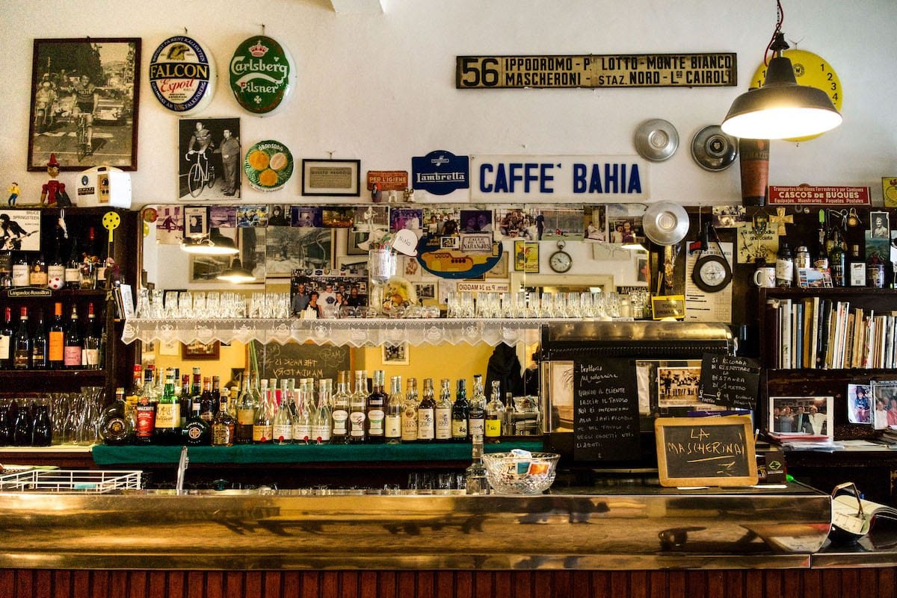
300 anni di Milano
Prima che qui ci fosse la città, c'era un'osteria con cucina: dal 1722, lungo la strada che portava al cimitero del Gentilino, dove si fermavano carrozze e cavalli.
Attorno crescevano orti e Navigli, passavano artigiani, barcaioli e contadini diretti in centro. La Madonnina era già lì, ad accoglierli con un piatto caldo e un bicchiere.
Nel 2023 la trattoria ha cambiato gestione senza tradire la sua anima: «l'anima della vecchia Milano con un tocco di freschezza», come la raccontano oggi i suoi ospiti.
- 1722 — Nasce l'osteria della Madonnina, sulla via per il Gentilino.
- Primo '900 — Nel cortile a ringhiera si gioca a bocce: è la storica Bocciofila Madonnina.
- Il mito — Qui viene «scoperto» da ragazzo il tenore Giuseppe Di Stefano, che vi torna con amici celebri.
- 2023 — Nuova gestione, stessa anima: la cucina milanese di sempre.
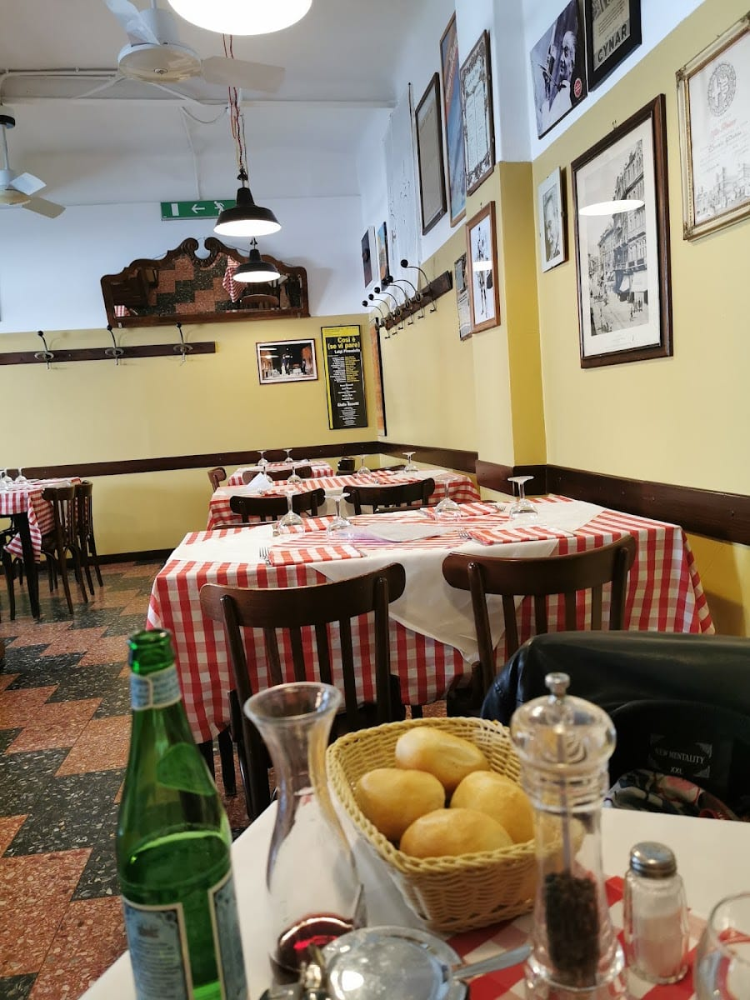
Un'edicola sulla
facciataIl nome viene da una piccola edicola votiva — una Madonnina di legno con la Vergine — collocata sulla facciata dell'edificio, a proteggere i viandanti dalle disgrazie del viaggio.
Da tre secoli è lei a vegliare su chi si ferma qui: la santella che ha dato il nome alla trattoria, e che ancora oggi accoglie chi entra.
La bocciofila
Per gran parte del Novecento, nel cortile a ringhiera della Madonnina si giocava a bocce: la Bocciofila Madonnina era un ritrovo popolarissimo del quartiere.
Fino al 1990 qui c'è stato uno degli ultimi campi dove si giocava «alla milanese» — pista più larga e tiro in diagonale. Oggi la vecchia stalla sul retro è diventata il dehors, sotto il pergolato.
Sport bar, osteria e bocciofila insieme: la Madonnina è sempre stata un pezzo di Milano che si ritrova.
La galleria
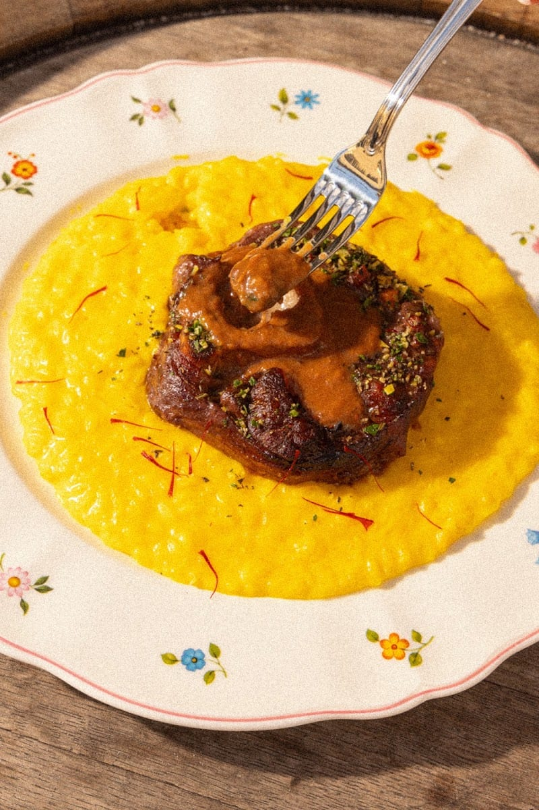
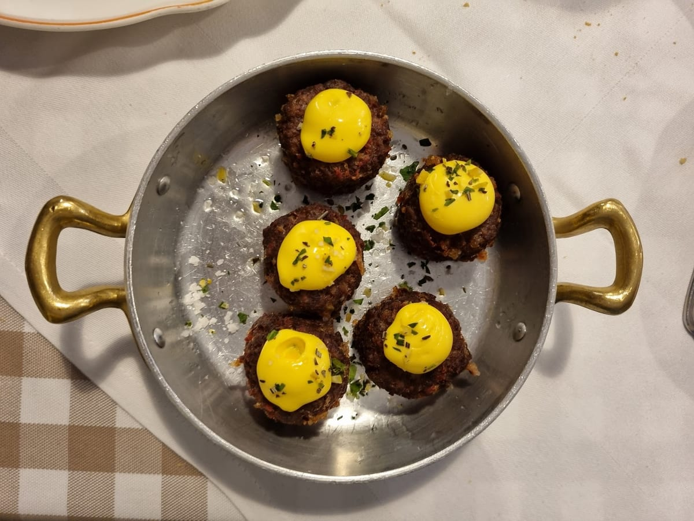
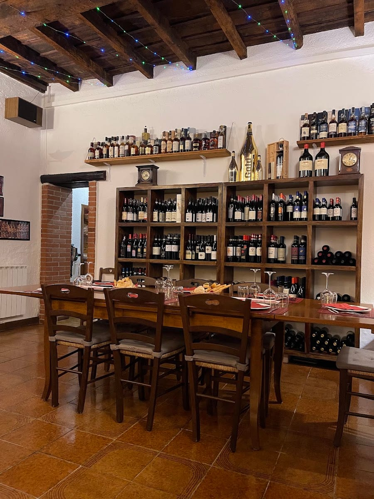
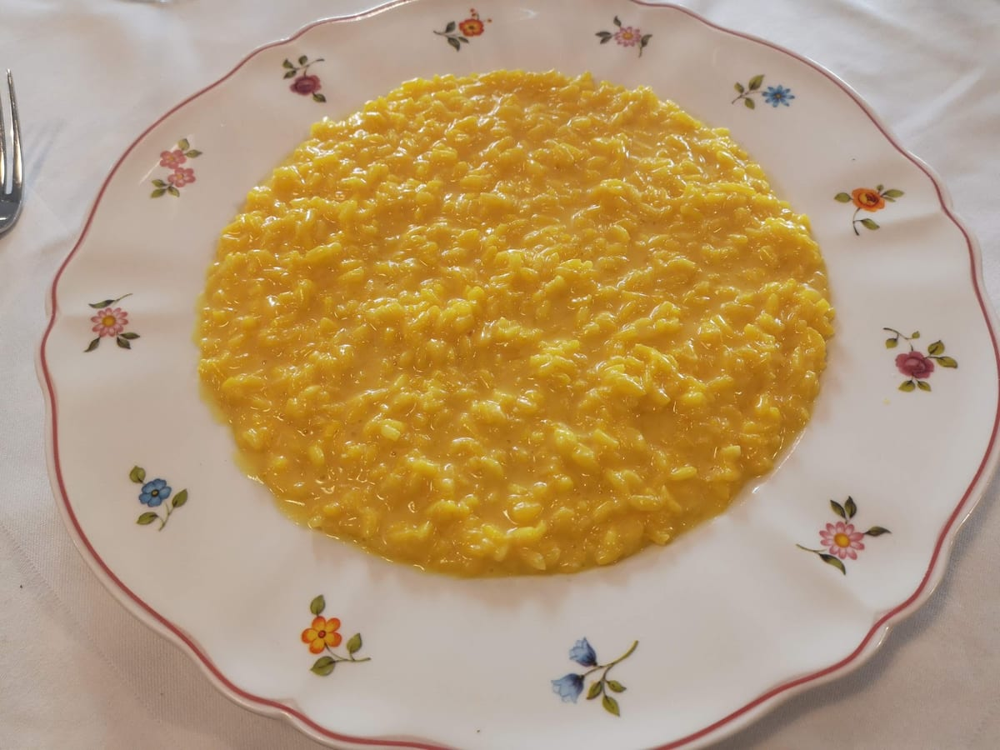
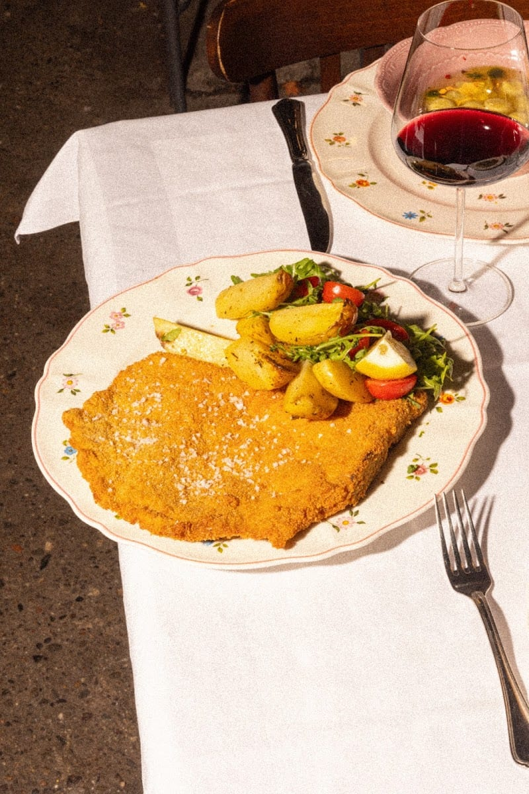
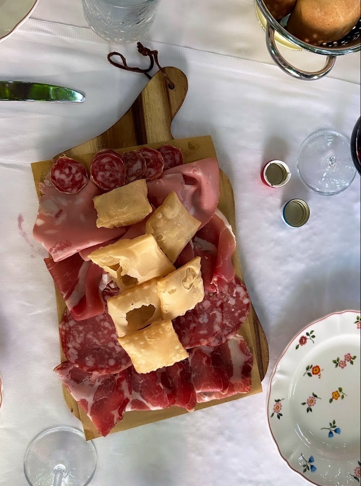
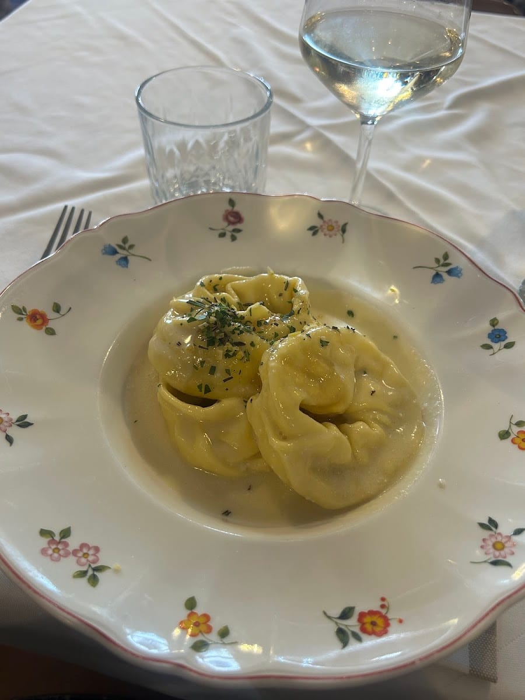
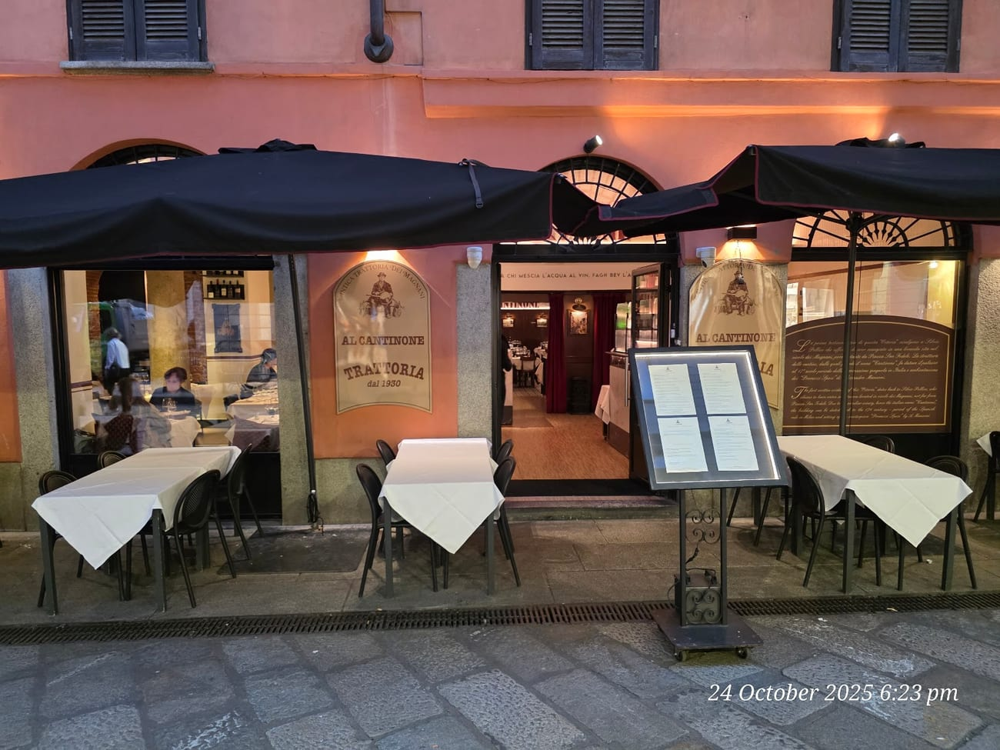
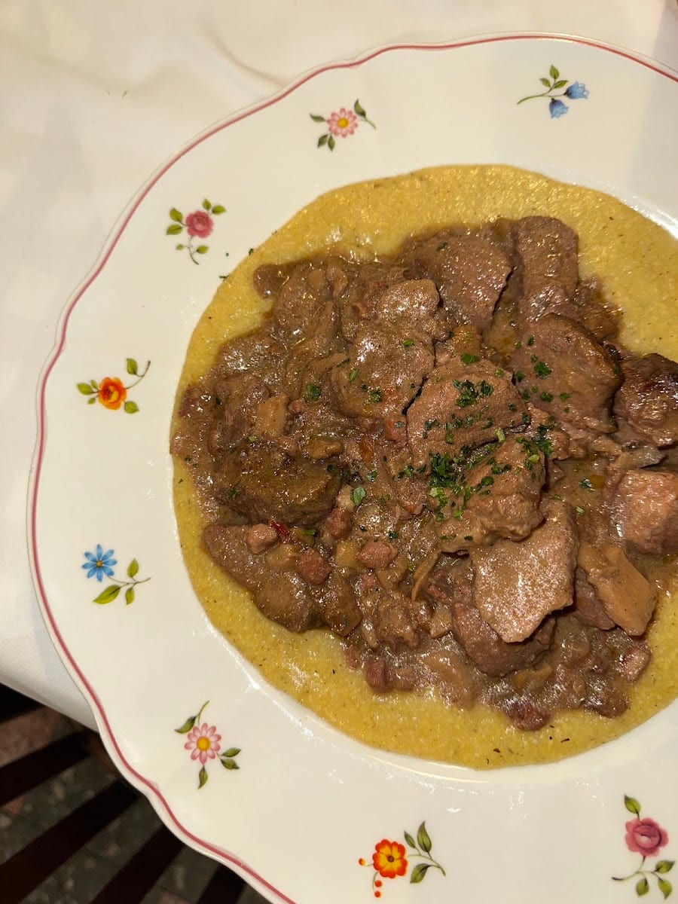
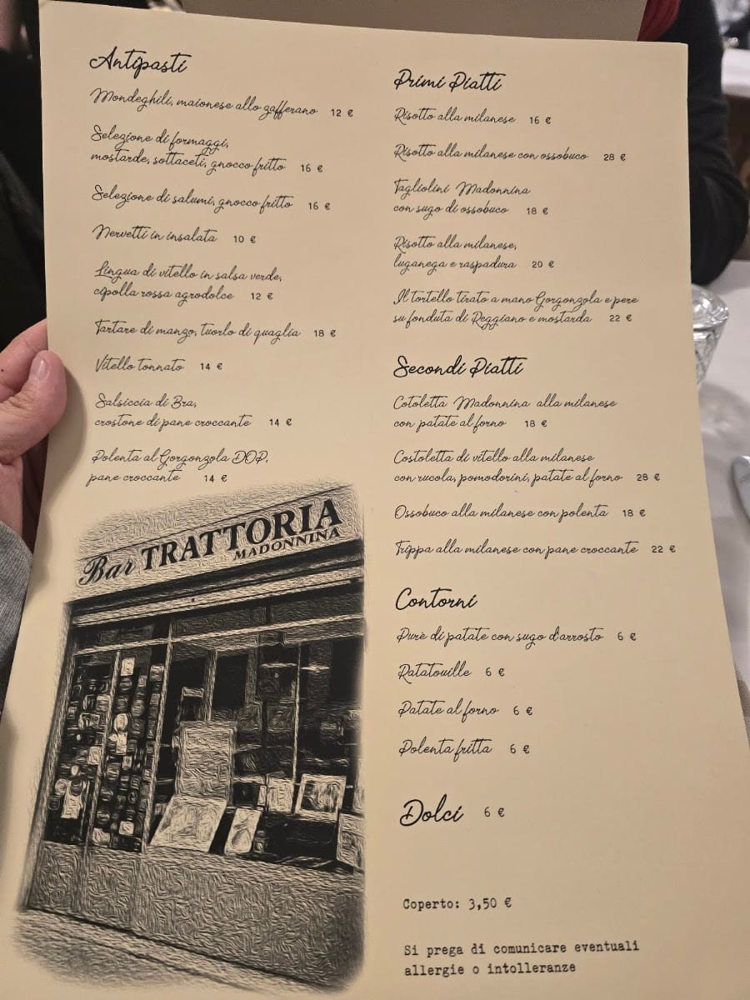
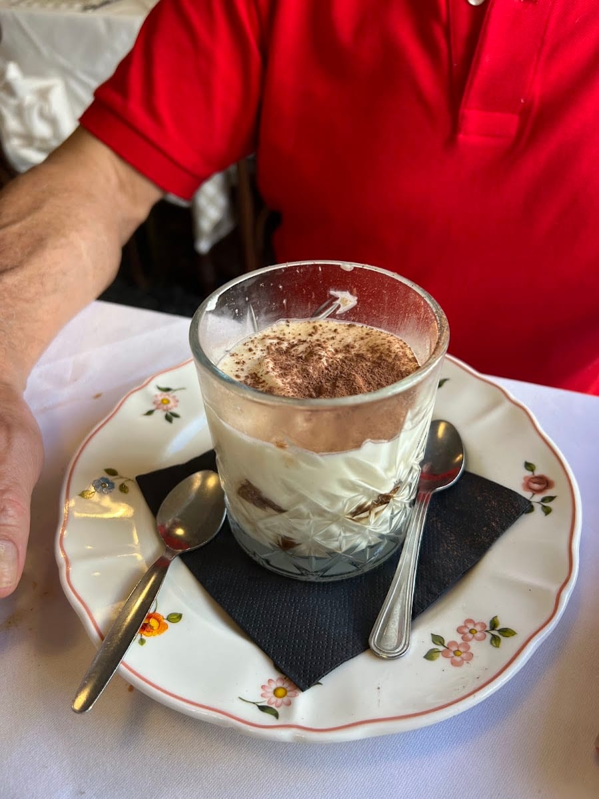
Un'accoglienza unica fatta di sorrisi, battute e accortezze. Un personale giovane, brillante, professionale e sempre preparato. Un cibo delizioso, dalle materie prime ottime alla lavorazione.
L'anima della vecchia Milano con un tocco di freschezza. Tornare alla Madonnina dopo il cambio di gestione è stata una bellissima sorpresa.
Risotto con ossobuco molto buono, e anche il tagliere con salumi e gnocco fritto. Una vera trattoria milanese.
Le cameriere super gentili e disponibili. Tornerò con la mia famiglia.
Dove siamo
Buono a sapersi
Un'osteria con lo stesso nome esiste qui dal 1722, lungo l'antica via per il cimitero del Gentilino: per questo è ricordata come la trattoria più antica della città.
Consigliato, soprattutto a cena e nel weekend. Potete chiamare il 02 8940 9089.
Cucina milanese e lombarda della tradizione: mondeghili, risotto alla milanese, ossobuco, cotoletta, trippa e dolci fatti in casa. Alcuni piatti cambiano ogni giorno.
Da lunedì a sabato a pranzo (12–15:30) e a cena (19–24); la domenica solo a pranzo (12–15:30).
Sì: nel cortile, dov'era la vecchia stalla, c'è un dehors sotto il pergolato.